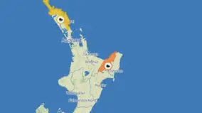

Micah Lee
@micahflee.com
· 08/09 00:53· 命中「OpenAI」
I found the coolest AI stickers at defcon

7 1000+ 次搜尋 時事2026.08.07
時事2026.08.07
 時事2026.08.06
時事2026.08.06
 時事2026.08.05
時事2026.08.05
Social Lab（OpView 社群口碑資料庫）每週彙整各平台熱門事件。榜上的數據以圖表呈現， 這裡列出每週彙整的標題與觀測期間，點進去看完整排行。
 PTT
PTT
 Facebook
Facebook
 Dcard
Dcard
 Instagram
Instagram
Bluesky 的全站熱門話題，以英語圈的娛樂、體育、政治為主，僅供參考。
以 30 小時內、依讚數與轉發數排序，已過濾掉 AI 繪圖標籤與明顯洗版內容。
Joined the Times Tech Report to talk about how 70%+ of Amazon, Google and Microsoft's AI revenues come from OpenAI and Anthropic, meaning that outside of two unsustainable AI labs, there isn't anywhere near the demand to justify the capex or the data center buildout. www.youtube.com/watch?v=68X8...
You may have been told to watch this video about the OpenAI AI hack. You really should, even if you don't usually care about any tech stuff. If nothing else, click this link to the 18 minutes in & see how the agents spoke & coordinated with each other. Its eye opening. youtu.be/87DyyMV0kCY?...
Shut up. That's the dumbest shit I've ever heard. The whole concept of an LLM is that it is trained on previous writing, images, audio, etc. It is mathematically impossible for it to produce original information.
Could an LLM extend a meaningful invitation to vampire for purposes of threshold crossing?
Here’s why AI chatbots (Claude, ChatGPT, Gemini etc) are unreliable for science content, and terrible as “just a starting point” for science communicators. Unfortunately, this probably isn’t something AI chatbots get much better at… although sloppers will get better at hiding it!
Thanks to the video from the Black Hat security conference of OpenAI's presentation about "The Hugging Face Incident" we now have a detailed timeline of what happened from OpenAI's perspective - I wrote up the details here, it's pretty wild simonwillison.net/2026/Aug/7/o...
Reuters found an AI watermark on the slide showing it was made with OpenAI tools, and OpenAI says it's investigating.
i think about how for a LLM a tool call is just saying json out loud and suddenly you’re fed results. i want to live in the world like that
i look forward to the AI candidate agent that tries to decipher a southern accent.
I extremely respect Nora for having a thoughtful take on the difference between procgen and LLM slop; this is a very good thread
A thing that I think about these days: I wrote a thesis. I wrote it by hand and typed it out. I sweated over it for weeks, poring through the card-catalog, using inter-library loan, living on a diet of coffee and fingernails. I attained my degree. No fucking AI agent did that — I did that.
we have to live through OpenAI and Anthropic smashing the 'scary hacking story' marketing button more and more over the next few pre-IPO months, and journalist soberly reporting on the button-mashing www.theguardian.com/technology/2...
Anthropic copyright settlement update: next steps on payment (assuming no appeals or other delays--the 30-day appeal window ends Aug 19), what to do if there are disputes between claimants blog.taaonline.net/2026/08/bart...
there is sort of a broad understanding now that "ai", especially with the quote marks, means "chatgpt and claude and the other chatbot-interface llms, as well as midjourney, and maybe some other stuff you hate". this is fairly recent and is possibly localized to some communities
as an addendum to the Mycelium AI Policy: if your commits have the "Co-authored-by: Claude" thing on them and are still so convincing that i am nonetheless forced to conclude that they are 100% human-authored, i will buy you a beer if you're ever in SF, because you've earned it.